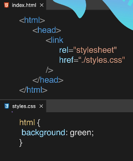

Style Me in Green!
3. External CSS
External css exists completely in different file unlike internal css. External css method is used by attaching a link of a css file to the existing
html file to mentain propere format of writing a code.
Syntax: < link href="style.css" >
